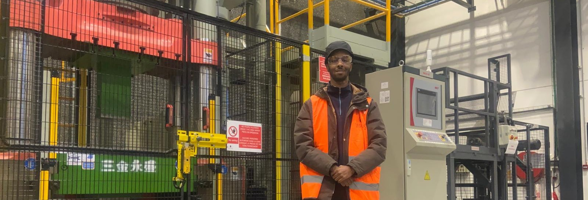
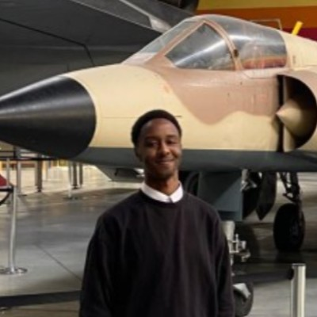
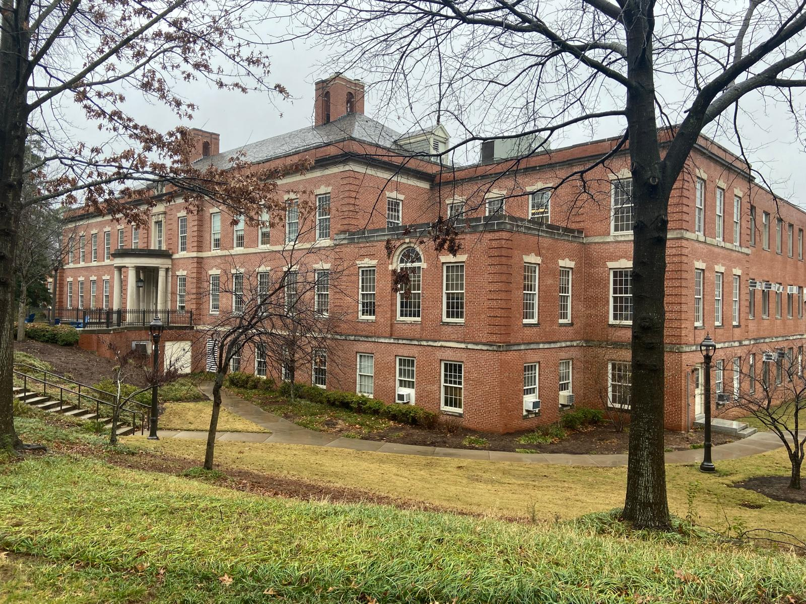
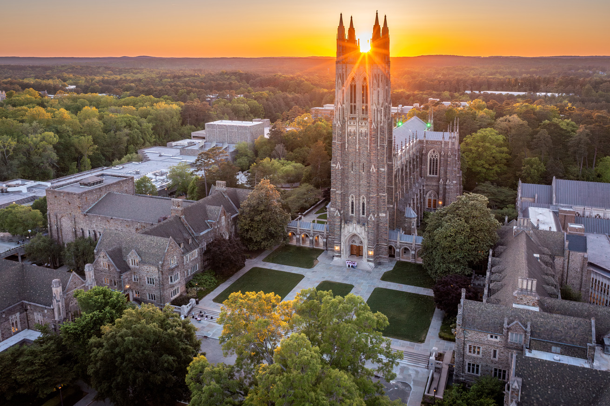
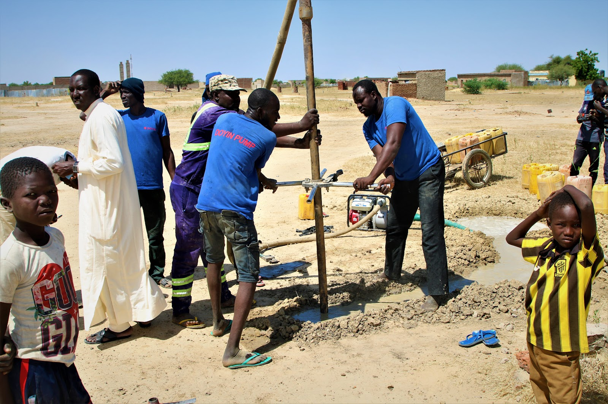
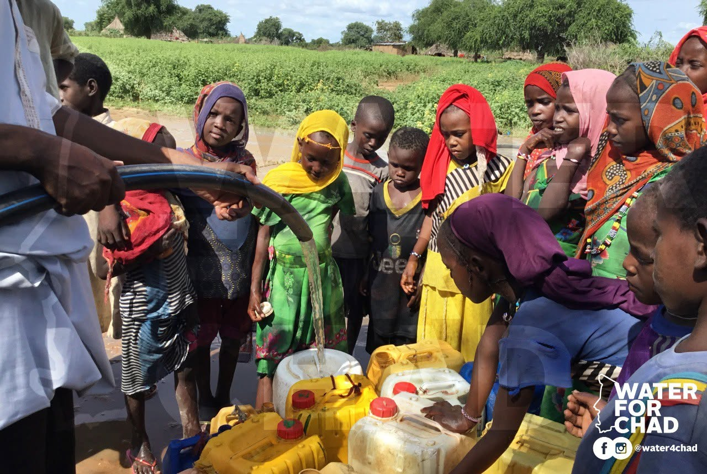
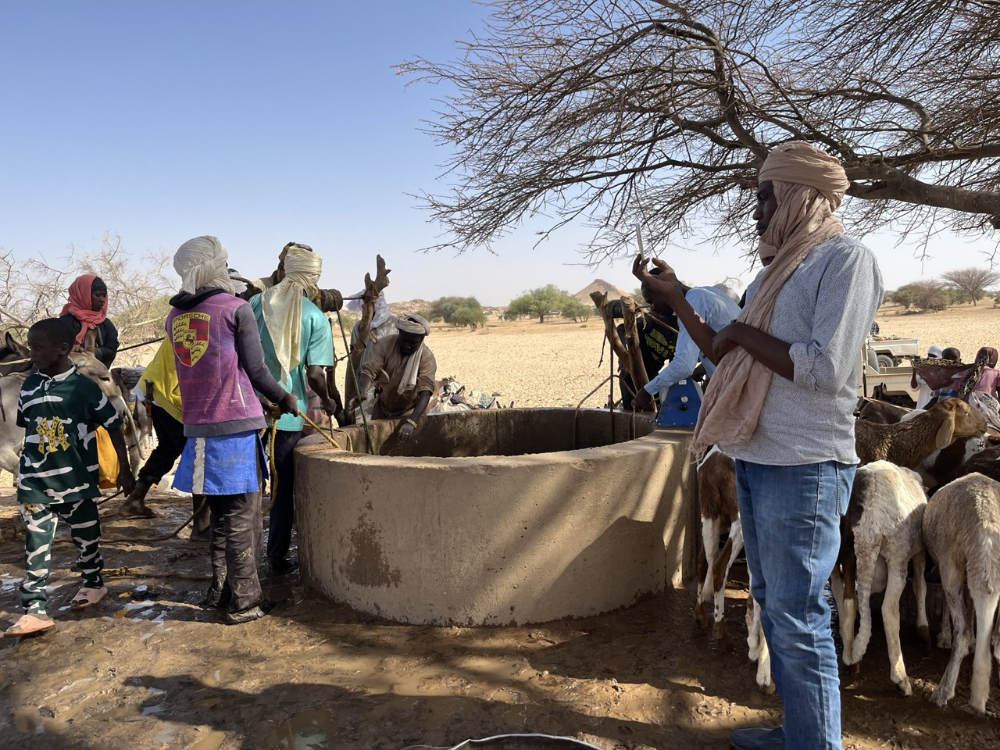
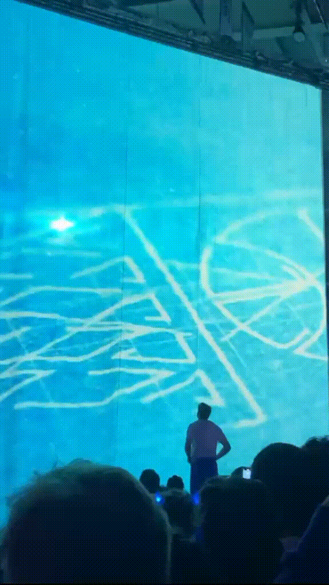

2026AUJOURD’HUI
Ingénieur VIE — Recherche matériaux réfractaires
Recherche et développement de matériaux réfractaires pour la métallurgie et la production d’acier.

1 image · Vesuviusimages/vesuvius.jpg

Photo de profilNé au Tchad, formé en France et passé par les États-Unis, je transforme des sujets complexes en projets concrets — de l’aéronautique à l’accès à l’eau.
↓Je suis ingénieur en science des matériaux, spécialisé en aéronautique. Mais l’ingénierie est pour moi un point de départ, pas une limite.
J’ai choisi les matériaux pour leur polyvalence : ils relient des mondes aussi différents que la sidérurgie, la microélectronique et l’aéronautique.
Mon fil conducteur : comprendre le problème, apprendre vite et mener une idée jusqu’à un résultat utile.
Chronologie décroissante
Recherche et développement de matériaux réfractaires pour la métallurgie et la production d’acier.

1 image · VesuviusTraduction de documents scientifiques du français vers l’anglais : une façon de perfectionner la langue tout en explorant des sujets variés.
Étude des vibrations de structures d’ailes aéronautiques et amélioration des modèles de simulation. Le sujet m’a tellement passionné que j’ai prolongé mon programme d’un an.
« Une petite équipe, une recherche de très haut niveau. »

Image 1 · Recherche
Image 2 · CampusUne histoire familiale commencée par un coup de main sur un logo et un site web, devenue un engagement dans la conduite de projets d’accès à l’eau.

Image 1 · Chantier
Image 2 · Équipe
Image 3 · Arrivée de l’eauPlanification, plans d’expériences, essais et analyse d’un revêtement en alumine destiné à protéger les parties chaudes des moteurs aéronautiques.
Parti chercher des fournisseurs de pompes pour Water4Chad, j’ai aussi programmé un simulateur citoyen d’émissions de CO₂, prototypé un générateur d’eau atmosphérique et contribué au dossier d’intégration de Water4Chad à l’ECOSOC.
Istanbul m’a marqué comme un carrefour vivant entre l’Orient, l’Occident et le monde slave.
Des expériences personnelles, avec leurs réussites et leurs limites.
Une plateforme créée sans savoir coder au départ, pour structurer l’apprentissage du dazaga, la langue de mon peuple d’origine.
600 € récoltés sur 25 000 € : un échec financier, mais la preuve que je pouvais réaliser et présenter un projet de zéro.
Voir la campagne Kickstarter ↗Des systèmes de forage et de pompage solaire conçus pour fonctionner dans des zones isolées du Tchad.
La technique n’a de valeur que si l’installation peut réellement être utilisée, entretenue et financée localement.
Une boutique lancée sur les réseaux sociaux pour tester la création de produit, la présentation et la vente à de vrais clients.
Quelques commandes, puis un arrêt assumé lorsque d’autres priorités ont pris le dessus.
L’image me fascine depuis l’adolescence. J’ai appris à filmer et monter pour mes campagnes, mes projets et les réseaux sociaux.
DaVinci Resolve · GIMPPrototypage de drones, impression 3D, mécanique : démonter, comprendre, reconstruire et tester.
Drones · 3D · MécaniqueWorkout, natation et vélo, pour le plaisir autant que pour entretenir une discipline personnelle.
Régularité · Progression« Je pensais connaître les États-Unis avant d’y aller. »
J’y ai découvert une culture plus différente que prévu : des gens extravertis, des étudiants qui appellent leurs professeurs par leur prénom et une efficacité difficile à ignorer.
Les campus ressemblent réellement à ceux des films : activités innombrables, sports presque professionnels, personnalités mondialement connues et chaînes nationales venues couvrir des rencontres universitaires.

GIF · États-UnisPlanification · Budgets · Coordination · Contrats · Logistique · Reporting
Matériaux · Aéronautique · Modélisation · Expérimentation · Analyse
AMDEC · Ishikawa · Gantt · Lean · Amélioration continue
MATLAB · Ansys · CATIA · SolidWorks · VBA · DaVinci Resolve
Je suis ouvert aux échanges autour de l’ingénierie, de la recherche, de l’innovation et des projets à impact concret.
Écrivez-moi ↗